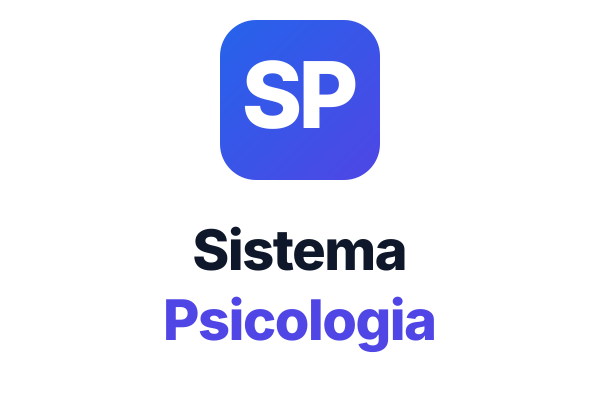
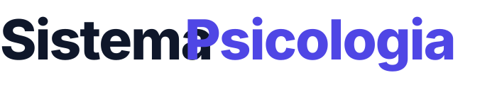

Este documento define o uso correto da identidade visual do Sistema Psicologia: cores, tipografia, logo e suas variações. Tudo que aparece com nosso nome — anúncio, e-mail, app, parceria — segue daqui.
Sistema Psicologia é a plataforma de gestão para clínicas e consultórios de psicologia no Brasil. Nossa marca comunica profissionalismo, confiança e cuidado — três valores que devem aparecer em qualquer ponto de contato.
O tom é direto e sem rodeios: tecnologia que resolve, não que enfeita. Evitamos jargão de marketing, exageros ("revolucionário", "único") e promessas que não cumprimos. Falamos com psicólogos como pares, não como leigos.
Cinco variações pra cada contexto. Use sempre os arquivos oficiais — não recrie.

Vertical — pôsteres, cartões, redes sociais
Wordmark — espaços muito horizontaisReserve sempre uma margem mínima ao redor do logo equivalente à altura da letra "S" da marca gráfica. Nada deve invadir esse espaço — nem texto, nem outras imagens, nem bordas.
Nunca use o logo abaixo destes tamanhos — perde legibilidade:
Quatro cores primárias + uma escala neutra. Use o gradiente Indigo → Blue como assinatura visual.
| Uso | Cor | Hex |
|---|---|---|
| Sucesso | Emerald | #10B981 |
| Aviso | Amber | #F59E0B |
| Erro | Red | #EF4444 |
| Info | Blue-500 | #3B82F6 |
Usamos uma única família — Inter — em três pesos. Reduz peso de download e mantém consistência.
Quando Inter não estiver disponível (e-mails, sistemas legados), use a stack:
system-ui, -apple-system, "Segoe UI", Arial, sans-serif.
Nunca use Times, Georgia, Comic Sans ou fontes decorativas.
Como falamos com o psicólogo — em qualquer canal.
| Em vez de | Diga |
|---|---|
| "Solução completa e inovadora" | "Plataforma que organiza prontuário, agenda e cobrança" |
| "Revolucione sua clínica hoje!" | "Veja se serve pra você em 10 minutos" |
| "Suporte 24/7 ilimitado" | "Suporte por WhatsApp em horário comercial" |
| "Prezado(a) psicólogo(a)" | "Oi, [nome]" |
Tudo está em sistemapsicologia.com.br/brand/. Sempre baixe a versão mais recente.
| Arquivo | Uso |
|---|---|
logo-icon.svg | Ícone com gradiente — padrão pra perfis e apps |
logo-icon-flat.svg | Ícone cor sólida — quando gradiente não renderiza bem |
logo-horizontal.svg | Lockup horizontal completo |
logo-vertical.svg | Lockup vertical (ícone sobre wordmark) |
wordmark.svg | Só o nome, sem ícone |
logo-monochrome-white.svg | Branco pra fundos escuros |
brand-book.html | Este documento (Ctrl+P para PDF) |
export-png.html | Ferramenta — converte SVG em PNG do tamanho que precisar |
Os SVGs escalam infinitamente sem perder qualidade. Quando precisar de PNG (ex: Google OAuth pede 120×120),
abra sistemapsicologia.com.br/brand/export-png.html em qualquer navegador, escolha o arquivo,
o tamanho e clique em "Baixar PNG".
Tamanhos comuns: 120×120 (Google OAuth), 192/512 (PWA), 1024×1024 (App Store, perfis sociais grandes), 2400 (banners).
Qualquer alteração nessas diretrizes — nova cor, novo logo, ajuste de tom — passa por Geisson Oleques (contato@sistemapsicologia.com.br). Não improvise versões "alternativas" do logo: se o caso de uso não está coberto aqui, pergunta antes de criar.